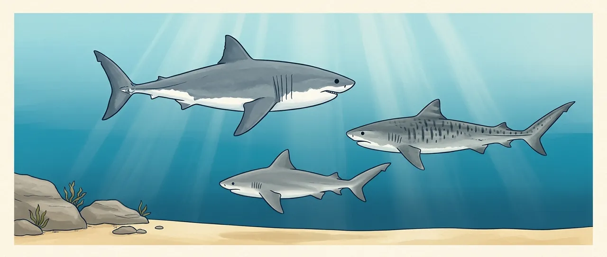

What independent, peer-reviewed field trials show for the personal and beach deterrents sold in Australia, species by species. Every figure below comes from a published study, linked at the bottom of the page.
Unprovoked bites in NSW from the Australian Shark-Incident Database (Taronga), 1791–2022. White and bull sharks account for nearly all deaths, which is why this page compares deterrents on those two species and the tiger shark.
| Species | NSW bites | NSW deaths | Sydney region | NSW since 2000 |
|---|---|---|---|---|
| White shark | 142 | 32 | 38 bites · 12 deaths | 82 bites · 8 deaths |
| Bull shark | 86 | 40 | 57 bites · 32 deaths | 15 bites · 1 death |
| Wobbegong | 54 | 0 | 19 · 0 | 37 · 0 |
| Whaler (unidentified) | 18 | 0 | 6 · 0 | 12 · 0 |
| Tiger shark | 11 | 5 | 2 · 2 | 3 · 1 |
| Other or unknown | 17 | 0 | 6 · 0 | 14 · 0 |
| All species | 328 | 77 | 128 · 46 | 163 · 10 |
Sydney region: latitude 33.4–34.2° S. Bull sharks caused more NSW deaths than white sharks, mostly in harbours and estuaries before 2000; since 2000 white sharks lead. Later incidents fit the same pattern: Long Reef, September 2025, was assessed as a white shark of about 3.4–3.6 m, and January 2026's Sydney bites, including North Steyne, Manly, were attributed to bull sharks. Source: Riley et al. 2022, Scientific Data,doi:10.1038/s41597-022-01453-9, public dataset as of 2022.
Devices a swimmer could wear come first. None of them has been trialled on a swimmer: the trials put them on a board replica, a diver rig or next to a bait.
| Device | White shark | Bull shark | Tiger shark |
|---|---|---|---|
| A swimmer could wear these | |||
| SharkBanz bandmagnets, worn on wrist or ankle | No effectSharkBanz 2 band, 50 trials, mounted on a board replica. No statistical effect on bait taken, distance or passes (p > 0.67).Huveneers 2018 | Not testedNo peer-reviewed trial. The maker cites its own 2017 Bimini trial (see below). | Not tested |
| Electronic Shark Defense Systemelectric ankle band, electrodes 10 cm apart | PartialBites per shark 87% → 52%, but bumps rose 25%. Effective range only about 12–17 cm.Egeberg 2019 | Not tested | Not tested |
| Ocean Guardian / Shark Shield Freedom7electric, worn at the ankle with a trailing electrode; built for divers | PartialMixed. Bites 81% → 11% with bait near the electrodes (Kempster 2016); no change in bites, 0.78 → 0.79, when the electrodes were further from the bait (Clarke 2024); no change in bait taken in Huveneers 2013, though surface breaches on a towed decoy fell from 16 to 0.Kempster 2016 · Clarke 2024 · Huveneers 2013 | Not testedNot trialled on bull sharks.Clarke 2024 | ReducesBite probability 0.91 → 0.22, a 69% drop.Clarke 2024 |
| Stripes, "eyes", patterned wetsuitspassive patterns on suits or boards | Not testedNo peer-reviewed trial found; only company-linked trials. Sharks are colour-blind and see a swimmer from below as a silhouette.Hart 2025 | Not tested | Not tested |
| Surfboard devices | |||
| Ocean Guardian Freedom+ Surfelectric pad on the board, 115 V | ReducesBait taken 96% → 40%. Mean approach 1.6 m → 2.6 m.Huveneers 2018 | ReducesBait taken 97.3% → 57.7%. More passes, but kept further off (32 → 55 cm).Gauthier 2020 | ReducesPart of a 54% drop in bite probability pooled across all three species.Clarke 2024 |
| Rpelaelectric, board-mounted | PartialVersion 1: little or no measurable effect (Huveneers 2018). Version 2: bite probability 0.75 → 0.25 (Blount 2021).Huveneers 2018 · Blount 2021 | PartialVersion 2: bait taken down 16.5%.Gauthier 2020 | Not tested |
| E-Shark Force · NoSharkelectric units, tested on a board | Not tested | No effectE-Shark Force: bait taken 97.3%, same as control. NoShark: no significant change.Gauthier 2020 | Not tested |
| SharkBanz surf leashmagnets in the leash | No effectBait touched or taken 96% on the control board, 94% with the leash; no statistical effect.Huveneers 2018 | Not tested | Not tested |
| Chillax waxsurf wax with repellent scent | No effectNo measurable effect on white sharks.Huveneers 2018 | Not tested | Not tested |
| Beach and boat systems, and research prototypes | |||
| SharkSafe Barrierbeach barrier: kelp-like pipes with magnets | ReducesStrong avoidance; how much the magnets add is unclear.O'Connell 2014 · 2018 | ReducesBull sharks excluded from the barrier area.O'Connell 2018 | Not tested |
| Ocean Guardian BOAT01electric buoy, long-range | PartialBait touched or taken 65% → 17% at 150 V, 64% → 40% at 80 V. Effective range about 2–3 m, so it cannot fence an area.Riley 2022 | Not tested | Not tested |
| LED counter-illuminationlights on the underside; research stage | ReducesOn towed seal decoys, brighter lights and horizontal stripes cut attacks; the striped pattern drew none. Not yet tested on surfboards or people.Ryan 2024 · Ryan 2026 | No effectNo reaction to lit static decoys: neither deterred nor attracted.Ryan 2026 | Not tested |
| Underwater soundorca calls, artificial noise | PartialLess time spent near the bait rig with artificial noise; none with orca calls. Authors: not an effective deterrent on its own.Chapuis 2019 | Not tested | Not tested |
"Not tested" means we found no independent, peer-reviewed field trial for that species. It does not mean the device fails.
Huveneers et al. (2018, PeerJ) tested the SharkBanz 2 band and the SharkBanz surf leash, both barium-ferrite magnets, on surfboard replicas at the Neptune Islands, South Australia: 50 trials per device, 297 trials in all, 44 white sharks, 1,413 passes. Sharks touched or took the bait 96% of the time on the control board and 94% of the time with the leash. Only the Freedom+ Surf showed statistical evidence of an effect (p < 0.001; p > 0.67 for every other device). The authors: "Neither the SharkBanz bracelet nor leash affected the behaviour of white sharks or reduced the percentage of baits taken."
The same paper notes that a barium-ferrite magnet's field falls from about 1,000 gauss at the magnet to the strength of the Earth's own field within 0.30–0.50 m, and that sharks in earlier magnet studies reacted only from under about 0.5 m. A shark would need to be within about 0.30 m to feel it. The authors add that the trial could reliably detect effects of about 15% or larger, so a smaller effect can't be ruled out.
SharkBanz argues the 2018 trial used bait and berley, a feeding scenario, and says white shark ambush attacks are outside the product's working parameters. It cites its own 2017 bull shark trial in Bimini, Bahamas, run with SharkDefense and a TV production company and analysed at Coastal Carolina University, reporting avoidance. That trial has not been published in a peer-reviewed journal.
An independent, peer-reviewed field trial of the SharkBanz 2 on bull or tiger sharks, using the same control-board method as the electric-device trials. None has been published as of November 2026.
Wearable devices first, then surfboard devices, then the buoy. Share of trials, or of sharks, ending in a bite or the bait being taken. Each line runs from the inactive control (hollow) to the active device (filled). The studies measured this in slightly different ways, which the small label beside each line names.
Every trial measured sharks taking a tuna bait or hitting a decoy, usually with berley in the water and several sharks competing. The authors themselves say this is far from normal surfing or swimming conditions. The numbers compare devices; they don't give your odds.
Electric fields fall off fast. The Freedom7 cut white shark bites when the bait sat close to the electrodes and had no effect when it sat further away. The ankle unit worked only within about 15 cm. What sits outside the field is unprotected.
Bull sharks appear to lean on electrical sense more than sight, so lights did nothing to them while the strongest electric unit still worked. Bull sharks also made more passes at an active board, while keeping further off. A result on white sharks doesn't carry over.
In the bull shark trials, sharks came closer as the days went on, and four individuals accounted for most of the bait taken. White sharks in the Freedom7 trial tolerated a slightly stronger field with each pass.
Figures are as reported by each study's authors. Percentages in Clarke 2024 are the authors' own; their "54%" is pooled across species, with no separate tiger figure for the surf unit. This page summarises research and is not safety advice.